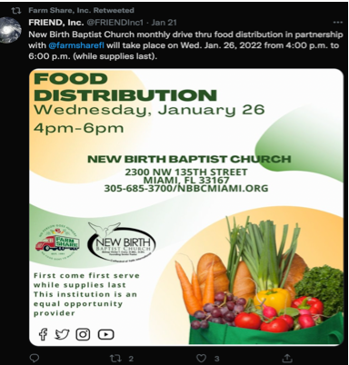
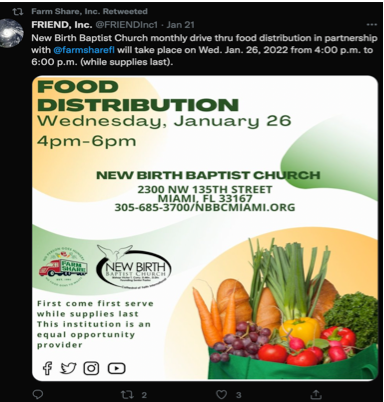

An organization in Miami-Dade is using food forests to create the foundations for students to learn about growing food and the connection between health and the environment.
Gather Food
Gather People
Gather Together
An organization in Miami-Dade is using food forests to create the foundations for students to learn about growing food and the connection between health and the environment.
